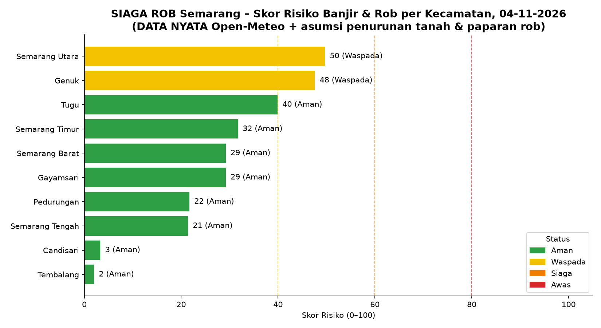
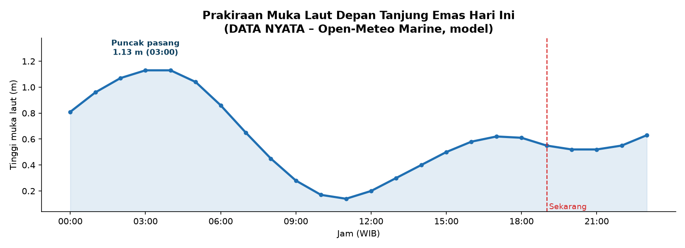
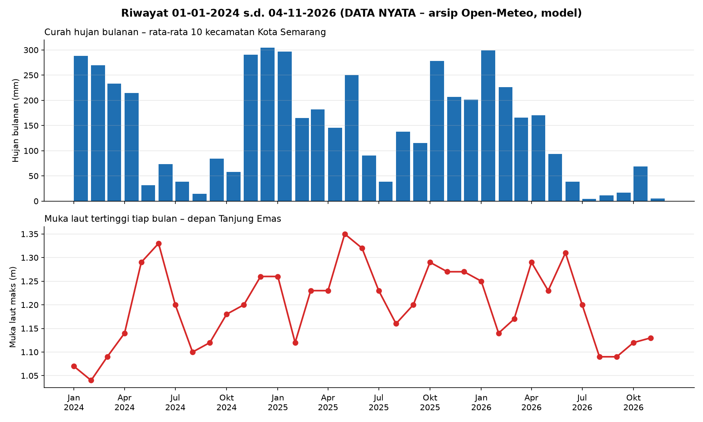
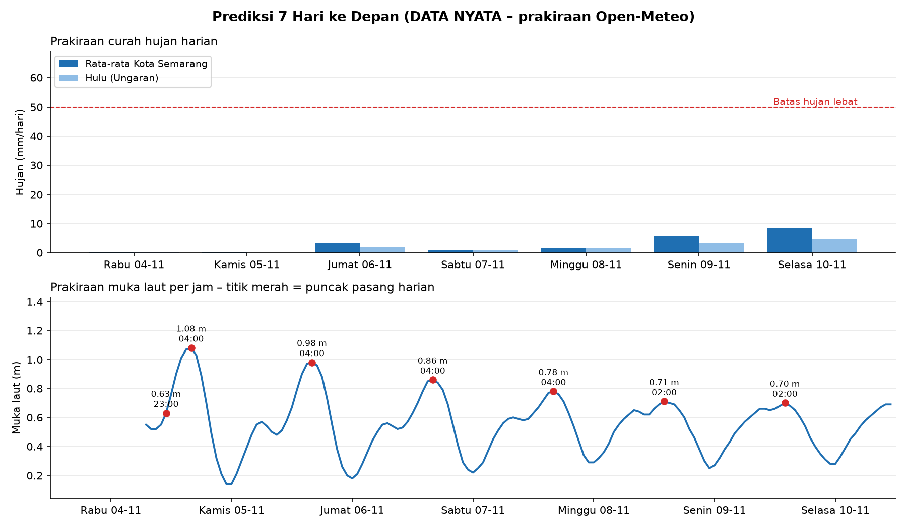

Status kecamatan hari ini DATA NYATA + ASUMSI
Bagaimana SIAGA ROB bekerja RANCANGAN SISTEM
Di aplikasi ini skor memakai data simulasi dan open data nyata; sensor IoT adalah rancangan untuk tahap penerapan.
Transformasi digital
| Cara konvensional | Dengan SIAGA ROB |
|---|---|
| Info banjir menyebar dari mulut ke mulut dan media sosial | Peringatan otomatis per kecamatan langsung ke ponsel warga |
| Bertindak setelah air datang (reaktif) | Bersiap sebelum rob datang berdasarkan prakiraan (proaktif) |
| Data tersebar di banyak instansi | Satu pusat data terbuka (CSV/JSON) yang bisa dipakai bersama |
| Keputusan berdasarkan perkiraan petugas di lapangan | Keputusan berbasis skor risiko dan rekomendasi data |
Grafik skor risiko hari ini DATA NYATA + ASUMSI

Hujan dan pasang laut dari Open-Meteo, diperbarui setiap program dijalankan; penurunan tanah dan paparan rob masih asumsi.
Peta risiko & posko pengungsian DATA SIMULASI
Kondisi nyata hari ini DATA NYATA · OPEN DATA
🌧️ Curah hujan (mm) – Open-Meteo
| Wilayah | Kelompok | 3 hari lalu | Hari ini | Prakiraan maks (s.d. +2 hari) |
|---|---|---|---|---|
| Semarang Utara | Kota Semarang | 4.1 | 0.2 | 3.0 |
| Genuk | Kota Semarang | 7.0 | 0.1 | 4.5 |
| Tugu | Kota Semarang | 11.3 | 0.0 | 4.3 |
| Semarang Timur | Kota Semarang | 4.1 | 0.2 | 3.0 |
| Gayamsari | Kota Semarang | 4.1 | 0.2 | 3.0 |
| Semarang Barat | Kota Semarang | 4.1 | 0.2 | 3.0 |
| Pedurungan | Kota Semarang | 7.0 | 0.1 | 4.5 |
| Semarang Tengah | Kota Semarang | 4.1 | 0.2 | 3.0 |
| Candisari | Kota Semarang | 4.1 | 0.2 | 3.0 |
| Tembalang | Kota Semarang | 3.6 | 0.3 | 2.7 |
| Sayung (Demak) | Sekitar Semarang | 11.5 | 0.1 | 4.9 |
| Kaliwungu (Kendal) | Sekitar Semarang | 15.4 | 0.0 | 5.0 |
| Ungaran (Kab. Semarang) | Sekitar Semarang | 1.1 | 0.1 | 2.0 |
🌊 Muka laut depan Tanjung Emas – Open-Meteo Marine
Tertinggi 1.13 m pukul 03:00 WIB, terendah 0.14 m (tunggang pasang 0.99 m)

🌤️ Prakiraan cuaca 24 jam – BMKG
- Bandarharjo, Semarang Utara: Cerah Berawan, Berawan, Cerah (hujan ±1.2 mm)
- Sembungharjo, Genuk: Cerah Berawan, Berawan, Cerah (hujan ±1.1 mm)
Data nyata hanya sebagai pembanding, tidak dipakai untuk menghitung skor.
Riwayat 01-01-2024 s.d. 04-11-2026 DATA NYATA · OPEN DATA

🌧️ Ringkasan curah hujan per wilayah – arsip Open-Meteo
| Wilayah | Total 2024 (mm) | Total 2025 (mm) | Total 2026 (s.d. hari ini) (mm) | Maks harian (mm) | Tanggal maks | Hari hujan lebat (≥50 mm) |
|---|---|---|---|---|---|---|
| Semarang Utara | 1811 | 1965 | 1069 | 59.1 | 21-10-2025 | 1 |
| Genuk | 1754 | 2131 | 1076 | 58.7 | 21-10-2025 | 1 |
| Tugu | 2123 | 2304 | 1175 | 60.5 | 21-10-2025 | 1 |
| Semarang Timur | 1811 | 1965 | 1069 | 59.1 | 21-10-2025 | 1 |
| Gayamsari | 1811 | 1965 | 1069 | 59.1 | 21-10-2025 | 1 |
| Semarang Barat | 1811 | 1965 | 1069 | 59.1 | 21-10-2025 | 1 |
| Pedurungan | 1754 | 2131 | 1076 | 58.7 | 21-10-2025 | 1 |
| Semarang Tengah | 1811 | 1965 | 1069 | 59.1 | 21-10-2025 | 1 |
| Candisari | 1811 | 1965 | 1069 | 59.1 | 21-10-2025 | 1 |
| Tembalang | 2516 | 2726 | 1258 | 61.3 | 21-10-2025 | 1 |
| Sayung (Demak) | 2404 | 2924 | 1547 | 64.3 | 23-01-2026 | 3 |
| Kaliwungu (Kendal) | 2492 | 2899 | 1472 | 65.4 | 21-10-2025 | 3 |
| Ungaran (Kab. Semarang) | 2664 | 3281 | 1341 | 65.6 | 21-10-2025 | 3 |
Resolusi model ±9–25 km, jadi kecamatan yang berdekatan bisa bernilai sama.
⛈️ 5 hari terbasah di Kota Semarang
| Tanggal | Hujan rata-rata kota (mm) | Hujan maks kecamatan (mm) |
|---|---|---|
| 21-10-2025 | 59.4 | 61.3 |
| 09-03-2024 | 38.6 | 40.9 |
| 24-10-2025 | 36.6 | 44.9 |
| 23-01-2026 | 34.3 | 48.3 |
| 19-08-2025 | 32.0 | 34.0 |
🌊 5 pasang laut tertinggi – arsip Open-Meteo Marine
| Tanggal | Muka laut maks (m) |
|---|---|
| 21-05-2025 | 1.35 |
| 01-06-2024 | 1.33 |
| 03-06-2025 | 1.32 |
| 22-05-2025 | 1.31 |
| 20-06-2026 | 1.31 |
Data model cuaca (reanalisis ERA5), diambil ulang sampai hari ini setiap program dijalankan.
Skor risiko berbasis data nyata DATA NYATA + ASUMSI
Rumus sama dengan skor simulasi: 40% hujan + 35% pasang laut + 25% penurunan tanah. Hujan dan pasang laut memakai data nyata Open-Meteo; pasang dikalikan paparan rob kecamatan (asumsi jarak ke pantai); penurunan tanah masih asumsi karena belum ada open data real-time.
📡 Hari ini
| Kecamatan | Hujan (mm) | Pasang (cm) | Penurunan tanah (asumsi) | Skor nyata | Status nyata | Status simulasi |
|---|---|---|---|---|---|---|
| Semarang Utara | 3.0 | 113 | 9.0 cm/th | 49.7 | 🟡 Waspada | 🔴 Awas |
| Genuk | 4.5 | 113 | 8.0 cm/th | 47.6 | 🟡 Waspada | 🔴 Awas |
| Tugu | 4.3 | 102 | 6.0 cm/th | 39.9 | 🟢 Aman | 🟠 Siaga |
| Semarang Timur | 3.0 | 79 | 5.0 cm/th | 31.7 | 🟢 Aman | 🟠 Siaga |
| Gayamsari | 3.0 | 68 | 5.0 cm/th | 29.2 | 🟢 Aman | 🟡 Waspada |
| Semarang Barat | 3.0 | 79 | 4.0 cm/th | 29.2 | 🟢 Aman | 🟡 Waspada |
| Pedurungan | 4.5 | 45 | 4.0 cm/th | 21.7 | 🟢 Aman | 🟡 Waspada |
| Semarang Tengah | 3.0 | 56 | 3.0 cm/th | 21.4 | 🟢 Aman | 🟡 Waspada |
| Candisari | 3.0 | 0 | 1.0 cm/th | 3.3 | 🟢 Aman | 🟢 Aman |
| Tembalang | 2.7 | 0 | 0.5 cm/th | 2.0 | 🟢 Aman | 🟢 Aman |
📚 Jumlah hari per status, 01-01-2024 s.d. 04-11-2026
| Kecamatan | 🔴 Awas | 🟠 Siaga | 🟡 Waspada | 🟢 Aman | Skor tertinggi | Tanggal |
|---|---|---|---|---|---|---|
| Semarang Utara | 0 | 1 | 1001 | 21 | 60.7 | 21-10-2025 |
| Genuk | 0 | 0 | 910 | 113 | 58.1 | 21-10-2025 |
| Tugu | 0 | 0 | 244 | 779 | 52.0 | 09-01-2026 |
| Semarang Timur | 0 | 0 | 3 | 1020 | 43.9 | 21-10-2025 |
| Gayamsari | 0 | 0 | 1 | 1022 | 41.7 | 21-10-2025 |
| Semarang Barat | 0 | 0 | 1 | 1022 | 41.4 | 21-10-2025 |
| Pedurungan | 0 | 0 | 0 | 1023 | 34.6 | 21-10-2025 |
| Semarang Tengah | 0 | 0 | 0 | 1023 | 34.5 | 21-10-2025 |
| Candisari | 0 | 0 | 0 | 1023 | 18.3 | 21-10-2025 |
| Tembalang | 0 | 0 | 0 | 1023 | 17.6 | 21-10-2025 |
Prediksi 7 hari ke depan & rencana aksi DATA NYATA · PRAKIRAAN + ASUMSI
Puncak risiko diprediksi Kamis 05-11-2026 di Kec. Semarang Utara (skor 47.8, Waspada, ancaman utama rob); puncak pasang hari itu pukul 04:00 WIB. Wilayah terdampak: Semarang Utara, Genuk.

📅 Ringkasan per hari
| Tanggal | Hujan kota (mm) | Hujan hulu (mm) | Pasang maks (m) | Jam puncak pasang | Wilayah terdampak (Waspada ke atas) |
|---|---|---|---|---|---|
| Rabu 04-11-2026 | 0.2 | 0.1 | 0.63 | 23:00 | – |
| Kamis 05-11-2026 | 0.1 | 0.0 | 1.08 | 04:00 | Semarang Utara, Genuk |
| Jumat 06-11-2026 | 3.4 | 2.0 | 0.98 | 04:00 | Semarang Utara, Genuk |
| Sabtu 07-11-2026 | 1.0 | 1.0 | 0.86 | 04:00 | Semarang Utara, Genuk |
| Minggu 08-11-2026 | 1.7 | 1.5 | 0.78 | 04:00 | Semarang Utara |
| Senin 09-11-2026 | 5.7 | 3.3 | 0.71 | 02:00 | Semarang Utara |
| Selasa 10-11-2026 | 8.3 | 4.6 | 0.70 | 02:00 | Semarang Utara |
🧮 Skor risiko per kecamatan per hari
| Kecamatan | Rabu 04-11 | Kamis 05-11 | Jumat 06-11 | Sabtu 07-11 | Minggu 08-11 | Senin 09-11 | Selasa 10-11 |
|---|---|---|---|---|---|---|---|
| Semarang Utara | 37 Aman rob | 48 Waspada rob | 46 Waspada rob | 43 Waspada rob | 41 Waspada rob | 41 Waspada rob | 41 Waspada rob |
| Genuk | 35 Aman rob | 45 Waspada rob | 44 Waspada rob | 40 Waspada rob | 39 Aman rob | 38 Aman rob | 39 Aman rob |
| Tugu | 28 Aman rob | 38 Aman rob | 37 Aman rob | 33 Aman rob | 32 Aman rob | 32 Aman rob | 31 Aman rob |
| Semarang Timur | 23 Aman rob | 30 Aman rob | 29 Aman rob | 27 Aman rob | 26 Aman rob | 26 Aman rob | 26 Aman rob |
| Gayamsari | 21 Aman rob | 28 Aman rob | 27 Aman rob | 25 Aman rob | 24 Aman rob | 24 Aman rob | 25 Aman rob |
| Semarang Barat | 20 Aman rob | 28 Aman rob | 27 Aman rob | 24 Aman rob | 23 Aman rob | 23 Aman rob | 24 Aman rob |
| Pedurungan | 16 Aman rob | 20 Aman rob | 20 Aman rob | 18 Aman rob | 18 Aman rob | 18 Aman rob | 19 Aman rob |
| Semarang Tengah | 15 Aman rob | 20 Aman rob | 20 Aman rob | 18 Aman rob | 17 Aman rob | 17 Aman rob | 18 Aman rob |
| Candisari | 3 Aman banjir hujan | 3 Aman banjir hujan | 3 Aman banjir hujan | 3 Aman banjir hujan | 3 Aman banjir hujan | 4 Aman banjir hujan | 5 Aman banjir hujan |
| Tembalang | 1 Aman banjir hujan | 1 Aman rob | 2 Aman banjir hujan | 1 Aman banjir hujan | 2 Aman banjir hujan | 3 Aman banjir hujan | 2 Aman banjir hujan |
🏛️ Rencana aksi Wali Kota & jajaran
| Waktu | Pelaksana | Tindakan |
|---|---|---|
| Hari ini | Wali Kota | Instruksikan seluruh OPD terkait siaga tingkat Waspada untuk Semarang Utara, Genuk. |
| Mulai hari ini | BPBD | Pantau hujan dan pasang laut tiap 3 jam; siapkan posko dan tim reaksi cepat di Semarang Utara, Genuk. |
| Paling lambat hari ini | Dinas Pekerjaan Umum | Uji coba rumah pompa dan pintu air, cek tanggul, bersihkan saluran di Semarang Utara, Genuk. |
| hari ini & Kamis 05-11-2026 | Diskominfo | Kirim peringatan SIAGA ROB ke warga Semarang Utara, Genuk: H-1 dan 3 jam sebelum puncak pasang (04:00 WIB). |
| Sebelum Kamis 05-11-2026 | Camat & Lurah | Gerakkan kerja bakti saluran; data warga rentan (lansia, disabilitas, ibu hamil, balita). |
Prakiraan hujan dan muka laut dari Open-Meteo, diperbarui setiap program dijalankan. Paparan rob, penurunan tanah, dan banjir kiriman dari hulu (Ungaran) adalah asumsi. Prakiraan makin tidak pasti untuk hari yang makin jauh.
Rekomendasi untuk Pemerintah Kota
- Operasikan semua rumah pompa dan kerahkan pompa portabel ke titik genangan.
- Buka posko pengungsian dan dapur umum; evakuasi lansia, anak-anak, dan penyandang disabilitas lebih dulu.
- Alihkan lalu lintas dari jalan yang tergenang.
- Siagakan tim SAR, ambulans, dan tenaga kesehatan.
- Cek kesiapan rumah pompa, pintu air, dan tanggul; siapkan pompa cadangan.
- Bersihkan saluran dan gorong-gorong dari sampah.
- Siapkan posko dan logistik; sebarkan peringatan lewat RT/RW dan media sosial.
- Pantau curah hujan dan pasang laut setiap 3 jam.
- Gerakkan kerja bakti normalisasi saluran.
- Ingatkan warga menyiapkan tas siaga.
- Lakukan pemeliharaan rutin saluran dan pompa.
- Edukasi warga tentang jalur evakuasi.
- Puncak hujan biasanya bulan Jan, Des, Nov: bersihkan saluran dan siapkan pompa sebulan sebelumnya.
- Pasang laut tertinggi biasanya bulan Jun, Mei, Des: siagakan tanggul, pintu air, dan posko di kecamatan pesisir.
- Pasang sensor IoT tinggi muka air dan pasang laut di titik rawan agar data simulasi bisa diganti data real-time.
- Kendalikan pengambilan air tanah untuk memperlambat penurunan tanah.
- Bangun kolam retensi dan sistem polder di kecamatan pesisir untuk menampung air saat hujan bersamaan dengan pasang.
- Perkuat tanggul pantai dan tanam mangrove sebagai sabuk hijau penahan rob.
- Bagikan data risiko dalam format terbuka (CSV/JSON) lewat portal Satu Data Kota Semarang.
- Hubungkan peringatan dini dengan kanal aduan warga (Lapor Wali) agar laporan genangan ikut terpantau.